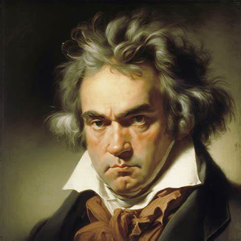
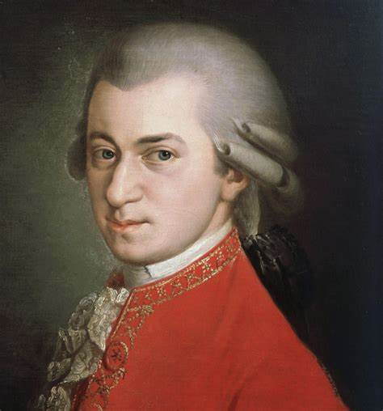
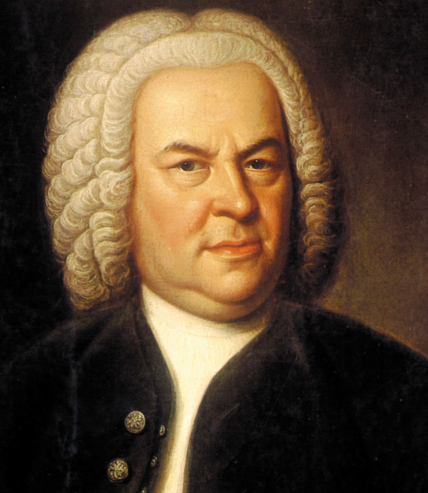
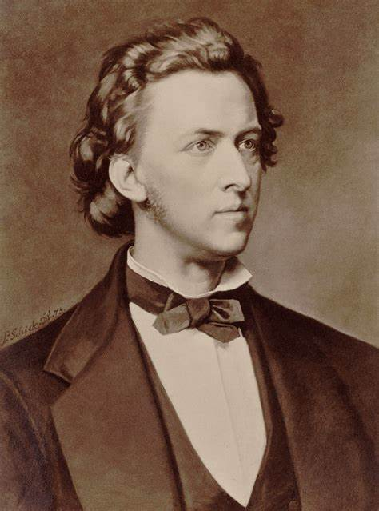

Beethoven es uno de los compositores más influyentes de la música clásica. Su música marcó la transición del Clasicismo al Romanticismo, y es conocido por sus sinfonías, conciertos y cuartetos de cuerdas.
Mozart fue un prodigio musical desde temprana edad y compuso más de 600 obras a lo largo de su vida. Sus óperas, sinfonías y conciertos han sido admirados por generaciones.
Considerado uno de los mayores compositores de todos los tiempos, Bach es conocido por su música barroca y por ser un maestro en la composición de fugas y contrapunto.
Chopin es famoso por su música para piano, siendo uno de los compositores más destacados del Romanticismo. Sus composiciones son admiradas por su belleza melódica y técnica pianística.
